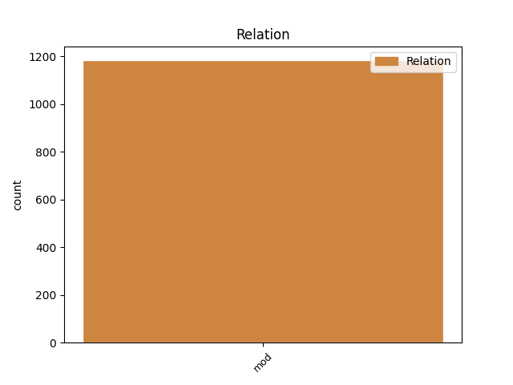
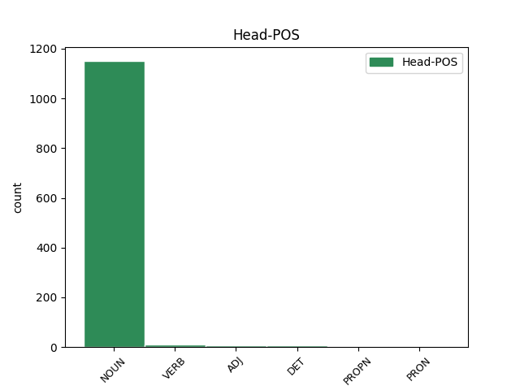
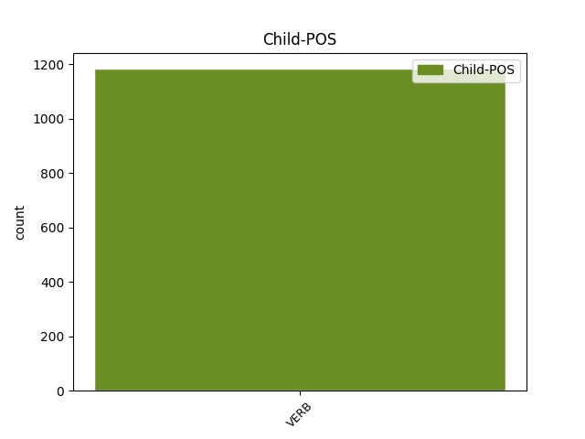

Distribution of features within this leaf



Agreement Rules sorted by frequency.
- When the dependent token is the modifer(mod) of the head token, and the dependent token is VERB.
1 Ginčai _ _ _ _ 0 _ _ _
2 dėl _ _ _ _ 0 _ _ _
3 šio _ _ _ _ 0 _ _ _
4 reglamento _ _ _ _ 0 _ _ _
5 taikymo _ _ _ _ 0 _ _ _
6 nagrinėjami _ _ _ _ 0 _ _ _
7 įstatymų _ _ _ _ 0 _ _ _
8 nustatyta nustatyti VERB vksm.dlv.neveik.būt.mot.vns.Įn. Case=Ins|Definite=Ind|Gender=Fem|Number=Sing|Polarity=Pos|Tense=Past|VerbForm=Part|Voice=Pass 9 mod _ _
9 tvarka tvarka NOUN dkt.mot.vns.Įn. Case=Ins|Gender=Fem|Number=Sing 0 _ _ _
10 . _ _ _ _ 0 _ _ _
Disagree Examples:
1 Ne _ _ _ _ 0 _ _ _
2 visai _ _ _ _ 0 _ _ _
3 aiškūs _ _ _ _ 0 _ _ _
4 ir _ _ _ _ 0 _ _ _
5 kriterijai kriterijus NOUN dkt.vyr.dgs.V. Case=Nom|Gender=Masc|Number=Plur 0 _ _ _
6 , _ _ _ _ 0 _ _ _
7 kuriais _ _ _ _ 0 _ _ _
8 remiantis _ _ _ _ 0 _ _ _
9 rinkta rinkti VERB vksm.dlv.neveik.būt.mot.vns.V. Case=Nom|Definite=Ind|Gender=Fem|Number=Sing|Polarity=Pos|Tense=Past|VerbForm=Part|Voice=Pass 5 mod _ _
10 ar _ _ _ _ 0 _ _ _
11 nerinkta _ _ _ _ 0 _ _ _
12 informacija _ _ _ _ 0 _ _ _
13 iš _ _ _ _ 0 _ _ _
14 šiuo _ _ _ _ 0 _ _ _
15 metu _ _ _ _ 0 _ _ _
16 aktyviai _ _ _ _ 0 _ _ _
17 veikiančių _ _ _ _ 0 _ _ _
18 1985 _ _ _ _ 0 _ _ _
19 - _ _ _ _ 0 _ _ _
20 1991 _ _ _ _ 0 _ _ _
21 m _ _ _ _ 0 _ _ _
22 . _ _ _ _ 0 _ _ _
23 įvykių _ _ _ _ 0 _ _ _
24 liudininkų _ _ _ _ 0 _ _ _
25 . _ _ _ _ 0 _ _ _
1 Finansų _ _ _ _ 0 _ _ _
2 ministras _ _ _ _ 0 _ _ _
3 Algirdas _ _ _ _ 0 _ _ _
4 Šemeta _ _ _ _ 0 _ _ _
5 vakar _ _ _ _ 0 _ _ _
6 Seimui _ _ _ _ 0 _ _ _
7 pristatė _ _ _ _ 0 _ _ _
8 patikslintą _ _ _ _ 0 _ _ _
9 šių _ _ _ _ 0 _ _ _
10 metų _ _ _ _ 0 _ _ _
11 biudžeto _ _ _ _ 0 _ _ _
12 projektą projektas NOUN dkt.vyr.vns.G. Case=Acc|Gender=Masc|Number=Sing 0 _ _ _
13 , _ _ _ _ 0 _ _ _
14 kuriuo _ _ _ _ 0 _ _ _
15 siūloma siūlyti VERB vksm.dlv.neveik.es.bev. Definite=Ind|Gender=Neut|Polarity=Pos|Tense=Pres|VerbForm=Part|Voice=Pass 12 mod _ _
16 apkarpyti _ _ _ _ 0 _ _ _
17 biudžeto _ _ _ _ 0 _ _ _
18 išlaidas _ _ _ _ 0 _ _ _
19 3,3 _ _ _ _ 0 _ _ _
20 mlrd _ _ _ _ 0 _ _ _
21 . _ _ _ _ 0 _ _ _
22 litų _ _ _ _ 0 _ _ _
23 . _ _ _ _ 0 _ _ _
1 Tačiau _ _ _ _ 0 _ _ _
2 demografinių _ _ _ _ 0 _ _ _
3 charakteristikų _ _ _ _ 0 _ _ _
4 nustatymu _ _ _ _ 0 _ _ _
5 tyrime _ _ _ _ 0 _ _ _
6 neapsiribojama _ _ _ _ 0 _ _ _
7 , _ _ _ _ 0 _ _ _
8 o _ _ _ _ 0 _ _ _
9 siekiama _ _ _ _ 0 _ _ _
10 atsakyti _ _ _ _ 0 _ _ _
11 į _ _ _ _ 0 _ _ _
12 klausimą _ _ _ _ 0 _ _ _
13 , _ _ _ _ 0 _ _ _
14 „ _ _ _ _ 0 _ _ _
15 kokia _ _ _ _ 0 _ _ _
16 dalis dalis NOUN dkt.mot.vns.V. Case=Nom|Gender=Fem|Number=Sing 0 _ _ _
17 išvykusiųjų išvykti VERB vksm.dlv.veik.būt-k.įvardž.vyr.dgs.K. Aspect=Perf|Case=Gen|Definite=Def|Gender=Masc|Number=Plur|Polarity=Pos|Tense=Past|VerbForm=Part|Voice=Act 16 mod _ _
18 neišnaudoja _ _ _ _ 0 _ _ _
19 savo _ _ _ _ 0 _ _ _
20 turimos _ _ _ _ 0 _ _ _
21 kvalifikacijos _ _ _ _ 0 _ _ _
22 ir _ _ _ _ 0 _ _ _
23 užsienyje _ _ _ _ 0 _ _ _
24 dirba _ _ _ _ 0 _ _ _
25 žemesnės _ _ _ _ 0 _ _ _
26 kvalifikacijos _ _ _ _ 0 _ _ _
27 darbus _ _ _ _ 0 _ _ _
28 “ _ _ _ _ 0 _ _ _
29 ir _ _ _ _ 0 _ _ _
30 kokią _ _ _ _ 0 _ _ _
31 tai _ _ _ _ 0 _ _ _
32 daro _ _ _ _ 0 _ _ _
33 įtaką _ _ _ _ 0 _ _ _
34 išvykusiųjų _ _ _ _ 0 _ _ _
35 pajamoms _ _ _ _ 0 _ _ _
36 , _ _ _ _ 0 _ _ _
37 žmogiškajam _ _ _ _ 0 _ _ _
38 kapitalui _ _ _ _ 0 _ _ _
39 ir _ _ _ _ 0 _ _ _
40 galimybėms _ _ _ _ 0 _ _ _
41 grįžti _ _ _ _ 0 _ _ _
42 ( _ _ _ _ 0 _ _ _
43 p _ _ _ _ 0 _ _ _
44 . _ _ _ _ 0 _ _ _
45 8 _ _ _ _ 0 _ _ _
46 ) _ _ _ _ 0 _ _ _
47 . _ _ _ _ 0 _ _ _
1 Tačiau _ _ _ _ 0 _ _ _
2 demografinių _ _ _ _ 0 _ _ _
3 charakteristikų _ _ _ _ 0 _ _ _
4 nustatymu _ _ _ _ 0 _ _ _
5 tyrime _ _ _ _ 0 _ _ _
6 neapsiribojama _ _ _ _ 0 _ _ _
7 , _ _ _ _ 0 _ _ _
8 o _ _ _ _ 0 _ _ _
9 siekiama _ _ _ _ 0 _ _ _
10 atsakyti _ _ _ _ 0 _ _ _
11 į _ _ _ _ 0 _ _ _
12 klausimą _ _ _ _ 0 _ _ _
13 , _ _ _ _ 0 _ _ _
14 „ _ _ _ _ 0 _ _ _
15 kokia _ _ _ _ 0 _ _ _
16 dalis _ _ _ _ 0 _ _ _
17 išvykusiųjų _ _ _ _ 0 _ _ _
18 neišnaudoja _ _ _ _ 0 _ _ _
19 savo _ _ _ _ 0 _ _ _
20 turimos _ _ _ _ 0 _ _ _
21 kvalifikacijos _ _ _ _ 0 _ _ _
22 ir _ _ _ _ 0 _ _ _
23 užsienyje _ _ _ _ 0 _ _ _
24 dirba _ _ _ _ 0 _ _ _
25 žemesnės _ _ _ _ 0 _ _ _
26 kvalifikacijos _ _ _ _ 0 _ _ _
27 darbus _ _ _ _ 0 _ _ _
28 “ _ _ _ _ 0 _ _ _
29 ir _ _ _ _ 0 _ _ _
30 kokią _ _ _ _ 0 _ _ _
31 tai _ _ _ _ 0 _ _ _
32 daro _ _ _ _ 0 _ _ _
33 įtaką _ _ _ _ 0 _ _ _
34 išvykusiųjų išvykti VERB vksm.dlv.veik.būt-k.įvardž.vyr.dgs.K. Aspect=Perf|Case=Gen|Definite=Def|Gender=Masc|Number=Plur|Polarity=Pos|Tense=Past|VerbForm=Part|Voice=Act 35 mod _ _
35 pajamoms pajamos NOUN dkt.mot.dgs.N. Case=Dat|Gender=Fem|Number=Plur 0 _ _ _
36 , _ _ _ _ 0 _ _ _
37 žmogiškajam _ _ _ _ 0 _ _ _
38 kapitalui _ _ _ _ 0 _ _ _
39 ir _ _ _ _ 0 _ _ _
40 galimybėms _ _ _ _ 0 _ _ _
41 grįžti _ _ _ _ 0 _ _ _
42 ( _ _ _ _ 0 _ _ _
43 p _ _ _ _ 0 _ _ _
44 . _ _ _ _ 0 _ _ _
45 8 _ _ _ _ 0 _ _ _
46 ) _ _ _ _ 0 _ _ _
47 . _ _ _ _ 0 _ _ _
1 „ _ _ _ _ 0 _ _ _
2 Užburtą _ _ _ _ 0 _ _ _
3 ratą _ _ _ _ 0 _ _ _
4 “ _ _ _ _ 0 _ _ _
5 sudaro _ _ _ _ 0 _ _ _
6 ir _ _ _ _ 0 _ _ _
7 sėkmingi _ _ _ _ 0 _ _ _
8 , _ _ _ _ 0 _ _ _
9 ir _ _ _ _ 0 _ _ _
10 nesėkmingi _ _ _ _ 0 _ _ _
11 atvejai _ _ _ _ 0 _ _ _
12 , _ _ _ _ 0 _ _ _
13 nors _ _ _ _ 0 _ _ _
14 abi _ _ _ _ 0 _ _ _
15 knygos _ _ _ _ 0 _ _ _
16 hipotezės _ _ _ _ 0 _ _ _
17 „ _ _ _ _ 0 _ _ _
18 tendencingai _ _ _ _ 0 _ _ _
19 “ _ _ _ _ 0 _ _ _
20 projektuoja _ _ _ _ 0 _ _ _
21 teigiamą _ _ _ _ 0 _ _ _
22 „ _ _ _ _ 0 _ _ _
23 rato _ _ _ _ 0 _ _ _
24 “ _ _ _ _ 0 _ _ _
25 pusę _ _ _ _ 0 _ _ _
26 , _ _ _ _ 0 _ _ _
27 visoje _ _ _ _ 0 _ _ _
28 knygoje _ _ _ _ 0 _ _ _
29 netrūksta _ _ _ _ 0 _ _ _
30 išsamių _ _ _ _ 0 _ _ _
31 diskusijų _ _ _ _ 0 _ _ _
32 apie _ _ _ _ 0 _ _ _
33 „ _ _ _ _ 0 _ _ _
34 neigiamą _ _ _ _ 0 _ _ _
35 “ _ _ _ _ 0 _ _ _
36 jo _ _ _ _ 0 _ _ _
37 pusę _ _ _ _ 0 _ _ _
38 , _ _ _ _ 0 _ _ _
39 ypač _ _ _ _ 0 _ _ _
40 analizuojant _ _ _ _ 0 _ _ _
41 viešąjį _ _ _ _ 0 _ _ _
42 diskursą _ _ _ _ 0 _ _ _
43 bei _ _ _ _ 0 _ _ _
44 daugumos dauguma NOUN dkt.mot.vns.K. Case=Gen|Gender=Fem|Number=Sing 0 _ _ _
45 grįžusiųjų grįžti VERB vksm.dlv.veik.būt-k.įvardž.vyr.dgs.K. Aspect=Perf|Case=Gen|Definite=Def|Gender=Masc|Number=Plur|Polarity=Pos|Tense=Past|VerbForm=Part|Voice=Act 44 mod _ _
46 teiginį _ _ _ _ 0 _ _ _
47 , _ _ _ _ 0 _ _ _
48 kad _ _ _ _ 0 _ _ _
49 „ _ _ _ _ 0 _ _ _
50 emigracijos _ _ _ _ 0 _ _ _
51 patirtis _ _ _ _ 0 _ _ _
52 neturėjo _ _ _ _ 0 _ _ _
53 jokios _ _ _ _ 0 _ _ _
54 įtakos _ _ _ _ 0 _ _ _
55 ieškant _ _ _ _ 0 _ _ _
56 darbo _ _ _ _ 0 _ _ _
57 grįžus _ _ _ _ 0 _ _ _
58 “ _ _ _ _ 0 _ _ _
59 ( _ _ _ _ 0 _ _ _
60 p _ _ _ _ 0 _ _ _
61 . _ _ _ _ 0 _ _ _
62 77 _ _ _ _ 0 _ _ _
63 ) _ _ _ _ 0 _ _ _
64 . _ _ _ _ 0 _ _ _